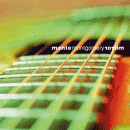
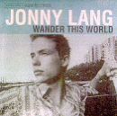
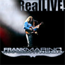
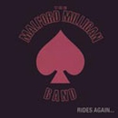
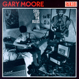
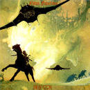
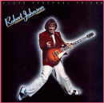
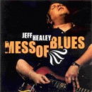

Fred Scheit » My Music

Texas guitarist, singer and
songwriter Monte Montgomery is rated by Guitar One magazine as one
of the Top 10 best undiscovered guitarists in America, and has earned praise from both critics and fellow musicians for his
stunning and imaginative six-string work as well as his abilities
as a singer and a crafter of ear-catching pop-rock songs.
|
|

Jonny Lang cut his debut
album in Memphis when he was just 15, and, upon its release in
1996, the guitar prodigy from Minneapolis instantly became one of
the leading lights of modern blues. I first heard and saw Jonny Lang in the film "Blues
Brothers 2000", where he performed the song "634-5789", along with
Eddie Floyd, and Wilson Pickett!
|
|

I've been a fan of Frank Marino's style of guitar playing for many years.
Why this guy is not classed as one of the world's greatest guitar slingers, I'll never know!
The RealLIVE! Double-CD set definitely isn't a collection of 3-minute structured pop songs, this is real in your face, free-form jamming! I suggest you check out some of the reviews at the
Amazon
website!
|
|

On a visit to Minneapolis in
May 2001, I was most fortunate to be able to see the band in
concert at Bunkers. It was a special night in the company of some very
special people. I felt like an outsider at first, amongst a crowd
that seemed to know every word of every song! In the song Cruisin',
Brian sings about "the pretty girls of Minnesota", and I think many
of them were in the crowd that evening!
|
|

What more can I say . . . that hasn't already been said?
Malford and the band are IMHO a CLASS ACT! If you like the Blues Brothers type of music,
you will be instantly at home here. Bought this CD from CD Baby whilst on vacation in US.
I played this non-stop on my rental car CD player, just perfect driving (pun intended!)
music!". Review on CD Baby website by: Fred Scheit.
|
|

From the mad axeman, guitar
superhero, through to the blues and more sophisticated music, Gary
Moore has paid his dues! I first remember his contributions to Thin
Lizzy, including his sizzling guitar work on "Waiting for an
Alibi". I've followed his later incursions into the Blues, to
discover what a truly versatile guitar player he is!
|
|

The one and only LP by Billy Cox's Nitro Function was released in the early 1970's. Billy had previously played bass guitar for Jimi Hendrix, hence my interest!
Now, some 30+ years later, I still continue to be amazed at the inventive and ballsy guitar playing of the Electric Lady, Char Vinnedge.
|
|

I saw Bonaroo, as part of the Warner Bros Road Show in the mid-70's, perform in Manchester, and was so impressed with their playing and songwriting skills,
that I purchased their excellent album, and wore it out! I recently acquired the album on CD, and renewed happy memories of my youth. It was also a privilege to exchange e-mails with Bobby Winkelman, the Bonaroo singer-guitarist and songwriter!
|
|

I bought the album Close Personal Friend by Robert Johnson, when it first came out in 1978, and was blown away by the inventive guitar playing, singing and, of course, the songs! This was at a time I was in to hard rock music! What a pity there's been no follow up.
Robert Johnson, where are you now??
|
|

Blind Canadian musician Jeff Healey died in March 2008, aged 41, after a lifelong battle against cancer. Famed for playing his electric guitar flat on his lap, Jeff lost his sight at the age of one after contracting cancer of the retina.
He was considered a prodigy and earned numerous Juno and Grammy nominations in the course of his career.
|
|
Desert Island Discs
Based on the long-running
BBC Radio 4 program, I have often thought about what my top ten
songs would be, should I ever be fortunate enough to be shipwrecked
on a desert island!
On many occasions, I have compiled a list of songs, then decided on
many changes, and so have never settled on a definitive
collection.
The collection, listed below, may not reflect my current tastes in
music, but they are important to me, as they represent various
stages in my life, from boy to man!
The songs are listed in alphabetical order, as it has proved
impossible for me to decide on the NUMBER ONE!
Artist/Song Title:
Boston/More Than A Feeling
Jimi Hendrix/Voodoo Chile
Robert Johnson/Responsibility
Monte Montgomery/When Will I
Mountain/Theme From An Imaginary Western
David Lee Roth/Yankee Rose
Rascal Flatts/Here Comes Goodbye
Jefferson Starship/Winds Of Change
Walter Trout/Say Goodbye To The Blues
ZZ Top/La Grange
|
|
|